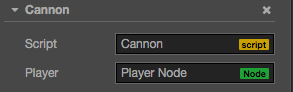

访问节点和组件
你可以在 属性检查器 里修改节点和组件，也能在脚本中动态修改。动态修改的好处是能够在一段时间内连续地修改属性、过渡属性，实现渐变效果。脚本还能够响应玩家输入，能够修改、创建和销毁节点或组件，实现各种各样的游戏逻辑。要实现这些效果，你需要先在脚本中获得你要修改的节点或组件。
在本篇教程，我们将介绍如何
- 获得组件所在的节点
- 获得其它组件
- 使用 属性检查器 设置节点和组件
- 查找子节点
- 全局节点查找
- 访问已有变量里的值
获得组件所在的节点
获得组件所在的节点很简单，只要在组件方法里访问 this.node 变量：
start: function () {
var node = this.node;
node.x = 100;
}获得其它组件
你会经常需要获得同一个节点上的其它组件，这就要用到 getComponent 这个 API，它会帮你查找你要的组件。
start: function () {
var label = this.getComponent(cc.Label);
var text = this.name + ' started';
// Change the text in Label Component
label.string = text;
}你也可以为 getComponent 传入一个类名。
var label = this.getComponent("cc.Label");在节点上也有一个 getComponent 方法，它们的作用是一样的：
start: function () {
cc.log( this.node.getComponent(cc.Label) === this.getComponent(cc.Label) ); // true
}如果在节点上找不到你要的组件，getComponent 将返回 null，如果你尝试访问 null 的值，将会在运行时抛出 "TypeError" 这个错误。因此如果你不确定组件是否存在，请记得判断一下：
start: function () {
var label = this.getComponent(cc.Label);
if (label) {
label.string = "Hello";
}
else {
cc.error("Something wrong?");
}
}获得其它节点及其组件
仅仅能访问节点自己的组件通常是不够的，脚本通常还需要进行多个节点之间的交互。例如，一门自动瞄准玩家的大炮，就需要不断获取玩家的最新位置。Cocos Creator 提供了一些不同的方法来获得其它节点或组件。
利用属性检查器设置节点
最直接的方式就是在 属性检查器 中设置你需要的对象。以节点为例，这只需要在脚本中声明一个 type 为 cc.Node 的属性：
// Cannon.js
cc.Class({
extends: cc.Component,
properties: {
// 声明 player 属性
player: {
default: null,
type: cc.Node
}
}
});这段代码在 properties 里面声明了一个 player 属性，默认值为 null，并且指定它的对象类型为 cc.Node。这就相当于在其它语言里声明了 public cc.Node player = null;。脚本编译之后，这个组件在 属性检查器 中看起来是这样的：
接着你就可以将层级管理器上的任意一个节点拖到这个 Player 控件：

这样一来它的 player 属性就会被设置成功，你可以直接在脚本里访问 player：
// Cannon.js
var Player = require("Player");
cc.Class({
extends: cc.Component,
properties: {
// 声明 player 属性
player: {
default: null,
type: cc.Node
}
},
start: function () {
var playerComp = this.player.getComponent(Player);
this.checkPlayer(playerComp);
},
// ...
});利用属性检查器设置组件
在上面的例子中，如果你将属性的 type 声明为 Player 组件，当你拖动节点 "Player Node" 到 属性检查器，player 属性就会被设置为这个节点里面的 Player 组件。这样你就不需要再自己调用 getComponent 啦。
// Cannon.js
var Player = require("Player");
cc.Class({
extends: cc.Component,
properties: {
// 声明 player 属性，这次直接是组件类型
player: {
default: null,
type: Player
}
},
start: function () {
var playerComp = this.player;
this.checkPlayer(playerComp);
},
// ...
});你还可以将属性的默认值由 null 改为数组[]，这样你就能在 属性检查器 中同时设置多个对象。不过如果需要在运行时动态获取其它对象，还需要用到下面介绍的查找方法。
查找子节点
有时候，游戏场景中会有很多个相同类型的对象，像是炮塔、敌人和特效，它们通常都有一个全局的脚本来统一管理。如果用 属性检查器 来一个一个将它们关联到这个脚本上，那工作就会很繁琐。为了更好地统一管理这些对象，我们可以把它们放到一个统一的父物体下，然后通过父物体来获得所有的子物体：
// CannonManager.js
cc.Class({
extends: cc.Component,
start: function () {
this.cannons = [];
this.cannons = this.node.getChildren();
}
});这里的 getChildren 是 cc.Node 原有的一个 API，可以获得一个包含所有子节点的数组。
你还可以使用 getChildByName：
this.node.getChildByName("Cannon 01");如果子节点的层次很深，你还可以使用 Cocos Creator 中新增的 cc.find 进行递归查找：
cc.find("Cannon 01/Barrel/SFX", this.node);全局名字查找
当 cc.find 只传入第一个参数时，将在整个场景中查找指定节点：
this.backNode = cc.find("Canvas/Menu/Back");路径最后面还可以加上用尖括号括起来的一个组件名，这样就能直接返回你需要的组件：
this.backLabel = cc.find("Canvas/Menu/Back<cc.Label>");访问已有变量里的值
如果你已经在一个地方保存了节点或组件的引用，你也可以直接访问它们，一般有两种方式：
通过全局变量访问
你应当很谨慎地使用全局变量，当你要用全局变量时，应该很清楚自己在做什么，我们并不推荐滥用全局变量。如果你用了全局变量，被老板发现了，很有可能丢掉饭碗。
如果你声明变量时，省略了关键字 var，你的变量就将成为全局变量，可以在项目里的任一脚本中直接引用。让我们试着定义一个全局对象 Global，这个对象里面包含了 backNode 和 backLabel 两个属性。
// Global.js, this file can have any name
Global = {
backNode: null,
backLabel: null,
};你可以在合适的地方直接访问并初始化 Global:
// Back.js
cc.Class({
extends: cc.Component,
onLoad: function () {
Global.backNode = this.node;
Global.backLabel = this.getComponent(cc.Label);
}
});初始化后，你就能在任何地方访问到 Global 里的值：
// AnyScript.js
cc.Class({
extends: cc.Component,
// start 会在 onLoad 之后执行，所以这时 Global 已经初始化过了
start: function () {
var text = 'Back';
Global.backLabel.string = text;
}
});通过模块访问
如果你不想用全局变量，你可以使用 require 来实现脚本的跨文件操作，让我们看个示例：
// Global.js, now the filename matters
module.exports = {
backNode: null,
backLabel: null,
};每个脚本都能用 require + 文件名(不含路径) 来获取到对方 export 的对象。
// Back.js
// this feels more safe since you know where the object comes from
var Global = require("Global");
cc.Class({
extends: cc.Component,
onLoad: function () {
Global.backNode = this.node;
Global.backLabel = this.getComponent(cc.Label);
}
});// AnyScript.js
// this feels more safe since you know where the object comes from
var Global = require("Global");
cc.Class({
extends: cc.Component,
// start 会在 onLoad 之后执行，所以这时 Global 已经初始化过了
start: function () {
var text = "Back";
Global.backLabel.string = text;
}
});更详细内容，请参考 模块化。
继续前往 生命周期回调。